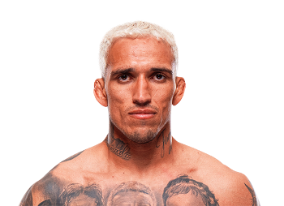

Charles Oliveira, conocido como “Do Bronx”, es uno de los peleadores brasileños más exitosos en la historia de las artes marciales mixtas. Nació el 17 de octubre de 1989 en Guarujá, São Paulo, Brasil. Durante su infancia enfrentó grandes dificultades económicas y problemas de salud, pero encontró en el deporte una oportunidad para cambiar su vida. Comenzó entrenando jiu-jitsu brasileño y rápidamente destacó por su gran talento en el combate en el suelo. Con el tiempo decidió dedicarse profesionalmente a las artes marciales mixtas, donde desarrolló una carrera impresionante gracias a su capacidad para finalizar combates mediante sumisiones.

Charles Oliveira comenzó su carrera en la Ultimate Fighting Championship (UFC) siendo muy joven. Durante muchos años enfrentó peleas difíciles, pero con el tiempo logró evolucionar como atleta y mejorar su striking, su resistencia y su confianza dentro del octágono. En 2021 alcanzó el momento más importante de su carrera cuando derrotó a Michael Chandler para convertirse en campeón de peso ligero de la UFC. Oliveira es famoso por poseer el récord de más finalizaciones en la historia de la UFC, lo que demuestra su increíble capacidad para terminar peleas antes del límite. Su estilo agresivo y su mentalidad ofensiva lo han convertido en uno de los peleadores más emocionantes de ver.
Durante su carrera ha competido en:
Charles Oliveira es conocido por:
Gracias a su talento en el suelo, su evolución en el striking y su mentalidad de lucha constante, Charles Oliveira se ha convertido en uno de los peleadores más respetados dentro del MMA moderno y en una de las figuras más importantes de la división de peso ligero.
Otros peleadores que podrían interesarte: